Project 5: Fun With Diffusion Models!
Name: Hillary Khuu
Part A: The Power of Diffusion Models!
Part 0: Setup
Deliverables: Prompts, Embeddings, Generated Images, and Reflection.
Random Seed Used: 100
For this project, I used the DeepFloyd IF diffusion model. DeepFloyd operates in two stages: the first stage generates low-resolution images of size 64 × 64, and the second stage upsamples them to 256 × 256.
Sampling from the Model
The sampling pipeline involves both stages: stage_1 produces the initial low-resolution image, and stage_2 refines and upsamples it. Each stage accepts a num_inference_steps parameter, which allows balancing image quality against generation speed.
Steps = 20
Steps = 100

Steps = 20
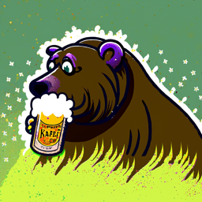
Steps = 100
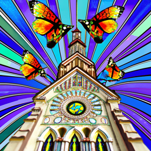
Steps = 20
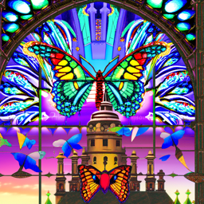
Steps = 100
I chose the prompts'a city skyline built from stacks of books', 'butterflies with stained-glass wings over a cathedral', and 'a bear drinking a beer' and saw images generated with only 20 inference steps lacked fine detail. For example, the book-based city skyline at 100 produced an image that looked more like actual skyscrapers in a city, while the image at 20 just looked like stacks of boooks. Higher step counts allow the model to better capture complex structure.
In general, increasing the number of steps enhances fine details and complexity, but can sometimes reduce overall realism, as textures and shapes begin to look more stylized. I had to regenerate a lot of images with steps=100 because it just looked weird.
A diffusion model works by reversing a noise process. Starting with a clean image x₀, we can iteratively add noise to produce xₜ at timestep t, until the image is nearly pure noise at T. The model then predicts the noise in xₜ and removes it, either fully to estimate x₀ or partially to step to xₜ₋₁. Repeating this process from pure noise x_T back to x₀ produces a clean generated image.
Setup
The noise added at each step is determined by pretrained noise coefficients ᾱₜ. The number of coefficients matches the number of sampling steps.
Part 1.1: Implementing the Forward Process
Implementation approach: See this formual for the forward process:
q(xt | x0) = 𝒩(xt; √(ᾱt) x0, (1 − ᾱt) I)
xt = √(ᾱt) x0 + √(1 − ᾱt) ε, ε ~ 𝒩(0, I)
We use the alphas_cumprod variable, which stores the cumulative product of ᾱ for all timesteps t. The forward process will be applied to the Campanile test image at timesteps t = 250, 500, 750.
Campanile at Noise Levels


Part 1.2: Classical Denoising
Gaussian Blur Denoising results (not as good as learned denoisers).
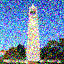

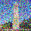


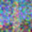
Part 1.3: One-Step Denoising
Using the pre-trained UNet to estimate noise and remove it in one step.
t = 250

t = 500
t = 750

Part 1.4: Iterative Denoising
Implementation:
- Strided timesteps: Create a reversed sequence of timesteps (e.g., 990 → 0 in steps of 30) to control the denoising schedule and set it in the stage 1 scheduler.
- Variance addition: The
add_variancefunction injects learned variance at each step to better model uncertainty in the denoising process. - Iterative denoising: Starting from a noisy image at a given timestep,
iterative_denoiseapplies the UNet repeatedly. At each step, it:- Predicts the noise and variance
- Computes a one-step estimate of the clean image
- Updates the image with the predicted variance
- One-step clean estimate: Computes a direct estimate of the clean image from the noisy input using the UNet output and alpha coefficients.
- Gaussian blur: Applies a Gaussian filter to the noisy image for comparison using
torchvision.transforms.functional.gaussian_blur.
Progressive Denoising (Every 5th loop)
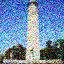
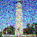
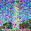
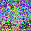
Comparison of Approaches
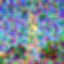
Part 1.5: Diffusion Model Sampling
Generating images from scratch (pure noise) using "a high quality photo".
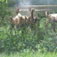
Part 1.6: Classifier-Free Guidance (CFG)
ε = εu + γ (εc − εu)
Generated images with CFG Scale > 1:
Part 1.7: Image-to-image Translation
SDEdit algorithm. Gradually reducing noise level to edit images. We add a litle noise to the original Campanile image and force it back onto the image manifold without conditioning. According to the SDEdit paper, "SDEdit allows stroke-based image synthesis, stroke-based image editing and image compositing without task specific optimization."
Campanile Edits
Custom Image 1 Edits: Clash Royale Goblin Emoji :p
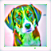
Custom Image 2 Edits: Roses

Part 1.7.1: Editing Hand-Drawn and Web Images
Web Image: smiley from Google
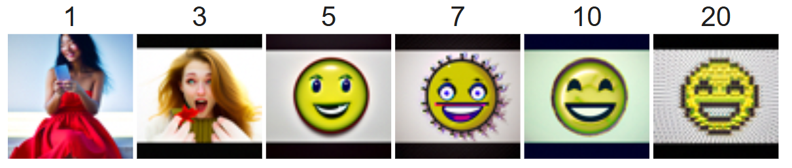
Hand Drawn 1: an image I drew of a penguin, my favorite animal!
Hand Drawn 2: a tiger I drew for my grandma
Part 1.7.2: Inpainting
inpaint: Start with from random noise in the masked region. For each timestep, predict the noise using the UNet for both conditional and unconditional embeddings. Apply CFG to combine the predictions, enhancing fidelity to the prompt. Compute the next less-noisy image (pred_prev_image) and add learned variance. Merge the inpainted region with the original image using the mask: the masked region is updated, and unmasked areas remain from the noisy original. Repeat until the first timestep, producing a clean inpainted image.
Campanile Inpainting

Custom Image 1 Inpainting
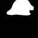
Custom Image 2 Inpainting
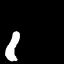
Part 1.7.3: Text-Conditional Image-to-image Translation
SDEdit with custom text prompts. Here are the results of text-conditioning applied to the Campanile and other photos using the prompt at noise levels [1, 3, 5, 7, 10, 20]
Snowynille (Snowy Campanile) (Prompt: "an oil painting of a snowy mountain village")
Mencsnow (My guinea pig Mencho + Snow) (Prompt: "an oil painting of a snowy mountain village")
He was transformed into a snowy arctic looking wolf
PenguinSnow (Prompt: "an oil painting of a snowy mountain village")
Part 1.8: Visual Anagrams
visual_anagrams:
The make_flip_illusion function generates a flip-based visual illusionusing diffusion. It takes a starting image and two prompt embeddings, one for the upright view and one for the flipped view. At each timestep, the UNet predicts noise for both paths (upright and vertically flipped), applies classifier-free guidance, and averages the results. The image is progressively denoised while blending the upright and flipped interpretations, producing an image that can appear as one scene when upright and another when flipped.
Illusion 1: Bear
Prompt: 'a bear drinking a beer'
Prompt: 'an oil painting of a snowy mountain village'
Illusion 2: Oasis / Campfire
Prompt: 'a desert oasis where palm trees are giant paintbrushes dripping color into the sand'
Prompt: 'an oil painting of people around a campfire'
Illusion 3: Rocket / Pencil
Prompt: 'a rocket ship'
Prompt: 'a pencil'
Illusion 4: Oil Paintings
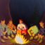
Prompt: 'an oil painting of people around a campfire'
Prompt: 'an oil painting of an old man'
Part 1.9: Hybrid Images
make_hybrids creates a hybrid image by blending two prompts at different frequency scales. One prompt guides the low-frequency, far-away details, while the other controls the high-frequency, close-up details. At each timestep, the UNet predicts noise for both prompts using classifier-free guidance. Low-pass and high-pass filtering separates the frequency components, which are then combined to produce a final guided noise estimate. The image is iteratively denoised using this combined noise, resulting in a single image that merges both prompt characteristics at different spatial scales.
Hybrid Images
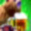
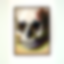
Part B: Diffusion Models from Scratch!
Part 1: Training a Single-Step Denoising UNet
Implementation:
- Conv: A convolutional layer that preserves the spatial resolution of the image while changing only the number of channels.
- DownConv: A convolutional layer that downsamples the input tensor by a factor of 2 in each spatial dimension.
- UpConv: A convolutional layer that upsamples the input tensor by a factor of 2 in each spatial dimension.
-
Flatten: An average pooling layer that reduces a
7×7spatial tensor to a1×1tensor. The value 7 corresponds to the final height and width after all downsampling operations. -
Unflatten: A convolutional layer that expands (unflattens) a
1×1tensor back into a7×7spatial tensor. - Concat: A channel-wise concatenation of tensors that share the same spatial (2D) dimensions.
1.2 Noising Process Visualization
The training objective focuses on a denoising task in which a noisy image z is mapped back to its corresponding clean image x. This mapping is learned by minimizing the L2 loss function.
Training pairs (z, x) are constructed using clean MNIST digit images x. Noise is added according to the following process:
z = x + σε, where ε ~ N(0, I)
Visualization of Noise Levels
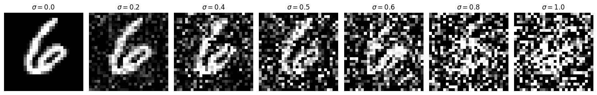
1.2.1 Training (Standard)
The denoising model was trained under the following setup:
-
Objective: Learn to remove noise from corrupted images z, where noise with
σ = 0.5is added to clean images x. -
Dataset: MNIST training set, using a batch size of
256. The dataset was shuffled prior to dataloader construction. -
Model: A UNet-based architecture with a hidden dimension of
D = 128. -
Optimizer: Adam optimizer with a learning rate of
1e-4. -
Training Duration: The model was trained for
5epochs.
During training, noise was applied dynamically as images were loaded from the dataloader. Because the noise term ε was randomly sampled each time, the model was exposed to different noisy versions of the same images across epochs, which helped improve generalization.
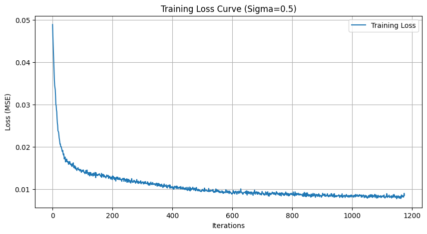
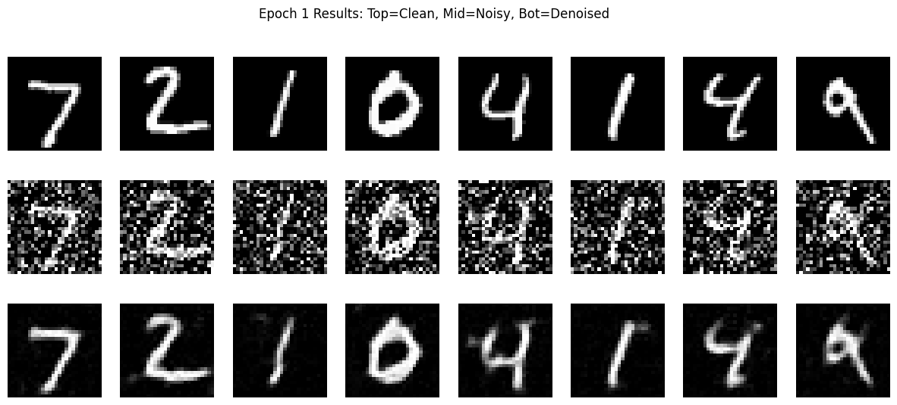
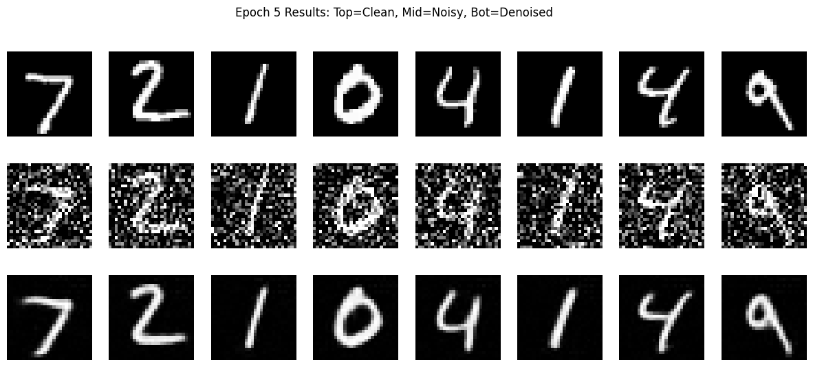
1.2.2 Out-of-Distribution Testing
Out of distribution testing evaluates model performance on noise levels that were not seen during training. Although the model was trained solely using noise with σ = 0.5, it was tested on MNIST digits corrupted with a range of noise intensities σ = [0.0, 0.2, 0.4, 0.5, 0.6, 0.8, 1.0].
Out-of-Distribution Test Results
These evaluations show the generalization ability and the limits of the denoiser when applied to noise levels that fall outside its training distribution.
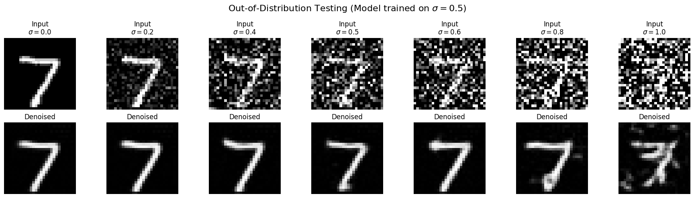
1.2.3 Denoising Pure Noise
The model was evaluated on its ability to transform pure Gaussian noise into meaningful images. This setting can be viewed as beginning from a blank input z = ε, where ε ~ N(0, I), and iteratively denoising it to obtain a clean output image x.
A separate denoiser was trained with input consisted solely of pure Gaussian noise ε ~ N(0, I) rather than noisy versions of real images. The model was trained for 5 epochs.
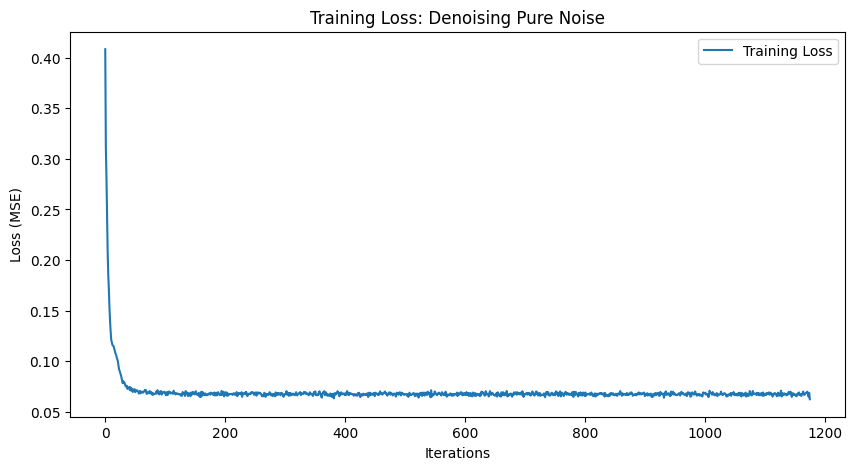
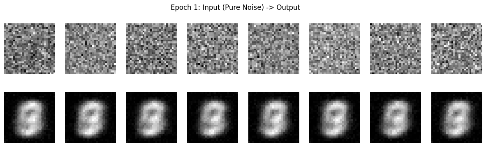
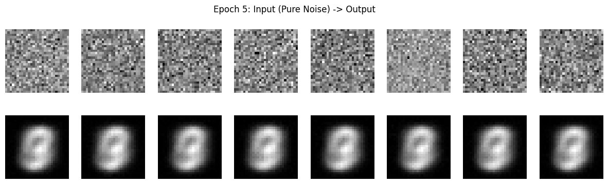
Analysis: After 1 and 5 epochs, the generated images look almost the same. They resemble digits like a 3 or an 8, but they are very faint and blurry, especially around the center. This happens because the model is learning to produce an “average” image that best fits all the training examples. What we see is the average of all MNIST digits made up of the most common strokes found across the dataset.
Part 2: Training a Flow Matching Model
Successful generation requires iterative denoising. To achieve this, we use a technique called flow matching, which trains a UNet model to predict the direction/flow that transforms noisy images into clean ones.
In the flow matching framework, generation begins with a pure noise image
x0 ~ 𝒩(0, I), which is gradually refined into a realistic image
x1. Intermediate samples are created by linearly interpolating between the noisy and clean images:
xt = (1 − t)x0 + t x1,
where x0 ~ 𝒩(0, I), t ∈ [0, 1]
This interpolation defines a path through image space that connects the noise distribution p0(x0) to the clean data distribution p1(x1). When t is small, the image is close to pure noise; as t increases, it becomes more similar to a clean image.
The flow can be interpreted as the velocity of this transformation (how the img changes):
u(xt, t) = d xt / d t = x1 − x0
The learning objective is to train a UNet model uθ(xt, t) to approximate this flow by minimizing the following loss:
L = 𝔼x0~p0, x1~p1, t~U[0,1]
‖(x1 − x0) − uθ(xt, t)‖²
2.2 Time-Conditioned UNet Training
Adding Time Conditioning to the UNet
To inclde the scalar timestep t into the UNet, a time-conditioning mechanism was added using fully connected blocks (FCBlocks). This allows the model to adapt its behavior based on the current stage of the denoising process.
Each FCBlock uses linear layers (nn.Linear) to embed the timestep. Because t is a scalar, the input feature dimension was set to 1.
Two separate FCBlocks were used to process the normalized timestep t ∈ [0, 1]:
-
fc1_tproduces an embeddingt₁that scales the unflatten operation. -
fc2_tproduces an embeddingt₂that scales the first upsampling layer (up1).
Training the Time-Conditioned UNet
For each iteration, a random image x1 was sampled from the training set, a random timestep t was chosen, noise was added to produce xt, and the network was trained to predict the flow at xt.
Training Specifications
- Objective: Predict the flow at
xtgiven a noisy image and timestep - Dataset: MNIST training set, batch size 256
- Model: Time-conditioned UNet, hidden dimension
D = 128 - Optimizer: Adam with initial learning rate 1e-4
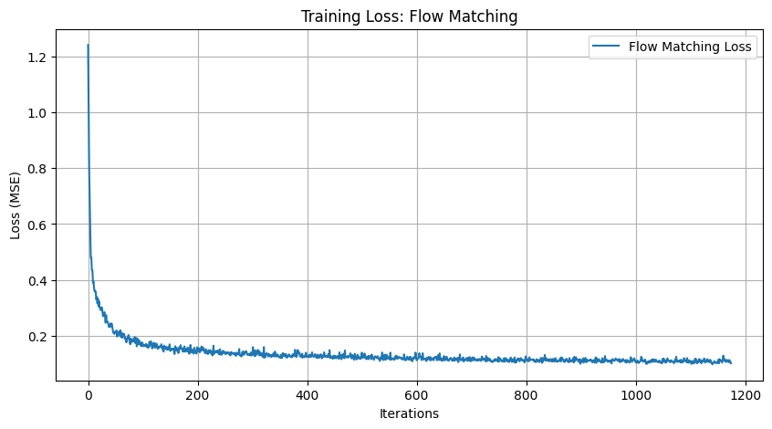
2.3 Sampling from Time-Conditioned UNet
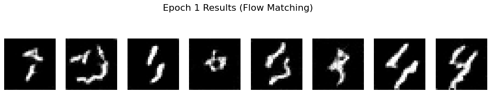
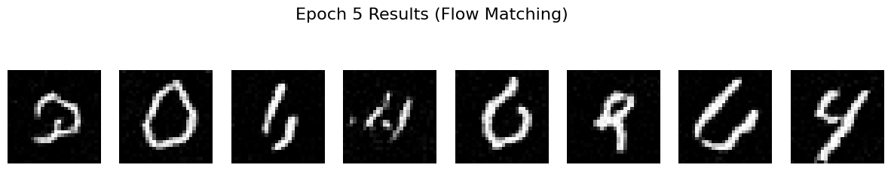
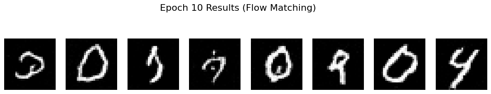
2.4 Adding Class-Conditioning
To enhance image generation and allow control over the digit, the UNet was extended to optionally condition on the digit class (0–9) using two additional FCBlocks.
The class vector c was one-hot encoded. To support unconditional generation (needed for classifier-free guidance), dropout was applied: 10% of the time (puncond = 0.1), the class vector was set to zero.
Conditioning was implemented as follows:
- Four FCBlocks:
fc1_t,fc1_c,fc2_t,fc2_c - Compute embeddings:
t1 = fc1_t(t),c1 = fc1_c(c),t2 = fc2_t(t),c2 = fc2_c(c) - Modulate network layers:
unflatten = c1 * unflatten + t1,up1 = c2 * up1 + t2
2.5 Training Class-Conditioned UNet
Used same procedure as the time-only conditioning. Included conditioning vector c (one hot vector) and unconditional generation.
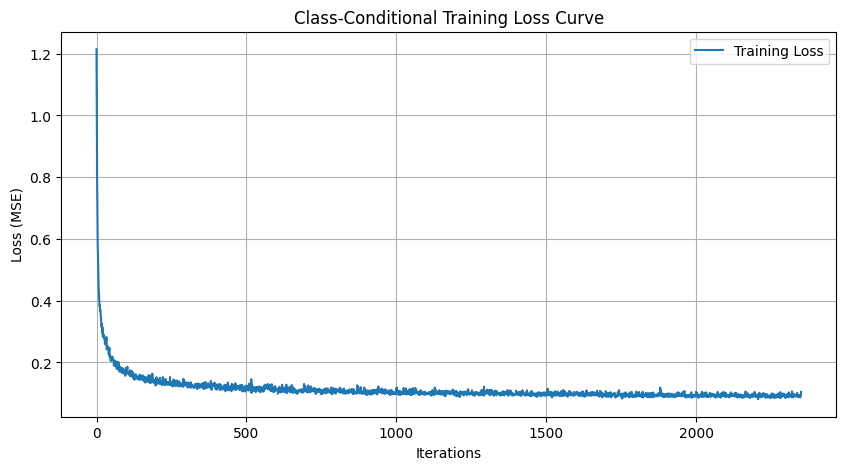
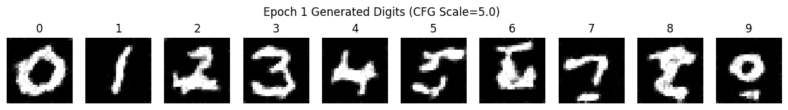
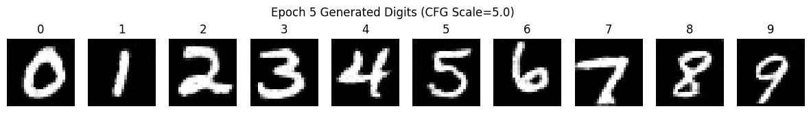
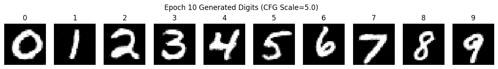
2.6 Sampling from Class-Conditioned UNet
Removing the Learning Rate Scheduler.
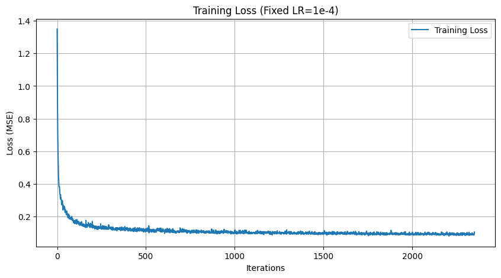
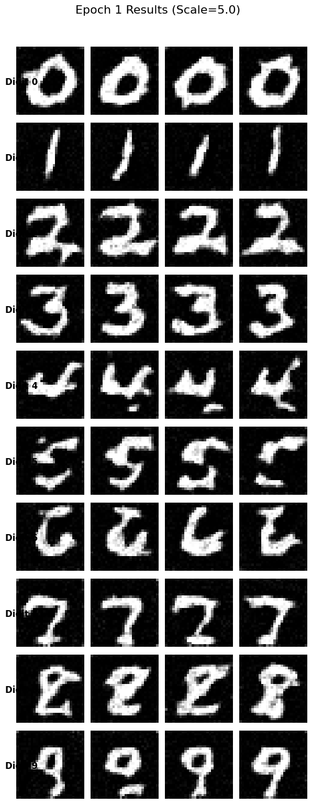
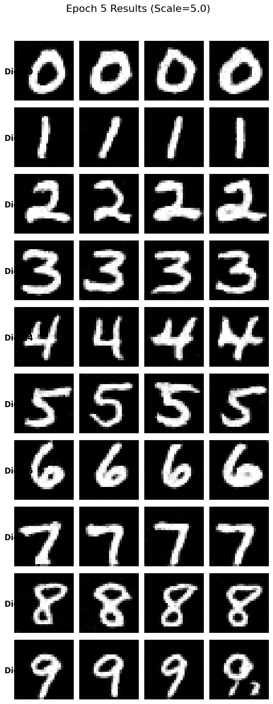
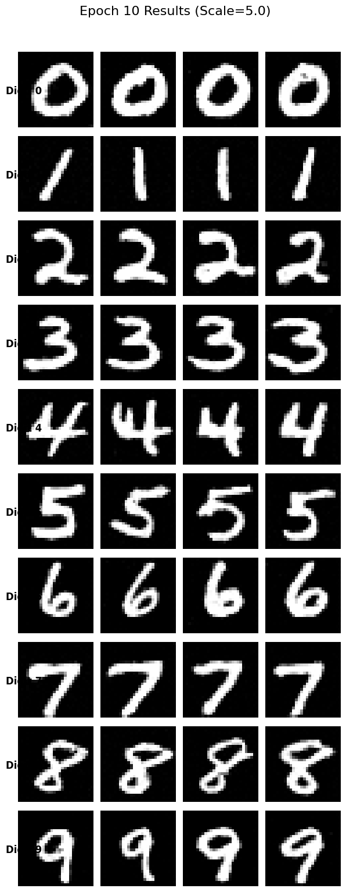
Approach: I implemented a constant learning rate strategy with a fixed value of 1e-4. While schedulers typically help fine-tune convergence by decaying the rate over time, the Adam optimizer is adaptive and performs well on its own if it starts with a stable rate. For the MNIST dataset, the UNet model (with hidden_dim=128) has sufficient capacity to learn the distribution without needing strong learning rate adjustments.